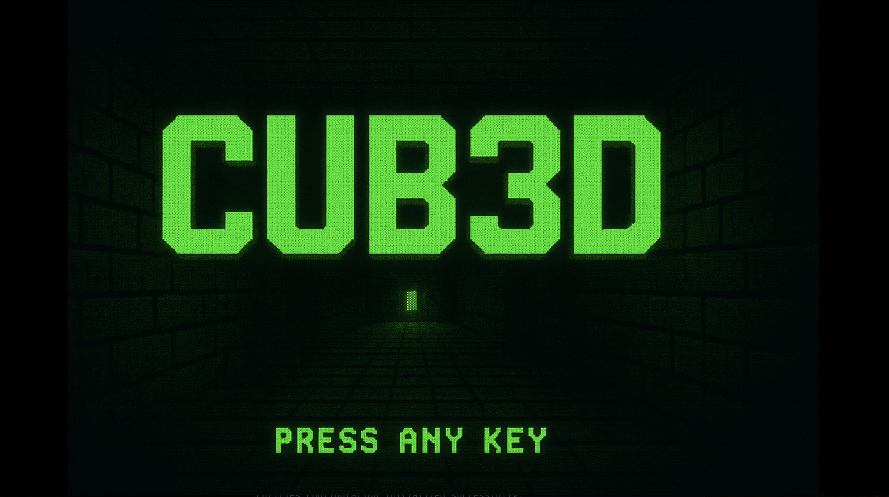
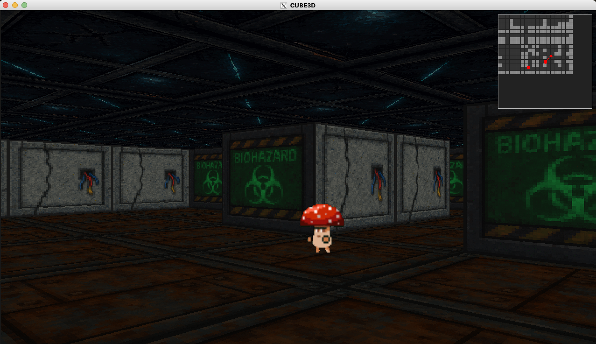

Jakub
Nenczak
Architecting scalable distributed systems, high-performance network servers, and production-grade AI integrations.
About
I am a Backend Software Engineer specializing in distributed systems, network programming, and cloud-native infrastructure.
Currently completing my B.S. in Automatic Control and Robotics at Wrocław University of Science and Technology and the rigorous systems engineering curriculum at 42 Roma Luiss.
My engineering philosophy prioritizes non-blocking I/O, strict data consistency, and deliberate architectural trade-offs over framework reliance.
Featured Engineering Work
Distributed RAG Document
Synthesis Platform
Automating synthesis of user-uploaded documents requires an asynchronous ingestion pipeline capable of semantic search without blocking the main application thread.
- Engineered a containerized RAG backend utilizing LlamaIndex for document chunking and metadata extraction.
- Integrated Qdrant as a dedicated Rust-based vector database for high-dimensional, low-latency similarity search.
- Designed a decoupled storage layer with MinIO for raw object storage and a clear migration path to PostgreSQL for distributed write scaling.
High-Performance HTTP/1.1
Server (webserv)
Standard networking libraries abstract away connection management. This project required building a fully RFC-compliant HTTP server from scratch to handle thousands of concurrent connections under strict memory constraints.
- Bypassed standard web frameworks to implement a custom event loop and HTTP request parser in C++.
- Engineered a single-threaded, non-blocking I/O architecture using
select()multiplexing, managing up to 1024 concurrent file descriptors. - Implemented robust state-machine logic to handle partial socket reads/writes (EAGAIN), CGI via
fork(), and memory safety under stress.
OS-Level Concurrency:
The Dining Philosophers
Simulating distributed resource contention without triggering deadlocks, livelocks, or thread starvation.
- Solved the classic Dining Philosophers problem by strictly managing OS-level concurrency in C.
- Implemented fine-grained mutex locking on shared resources (forks and stdout) to prevent data races.
- Optimized context-switching and CPU utilization, ensuring mathematically sound resource allocation under high contention.
Minimalist UNIX Shell
(Minishell)
Implementing a shell from scratch demands correct lexing, parsing, process lifecycle management, and signal handling — all without a single global variable beyond signal state.
- Built a Bash-inspired shell in C handling pipes, I/O redirection (including heredoc and append), and environment variable expansion with
$?. - Implemented all builtins (
cd,export,unset,env,exit) and child process execution viafork()/execve(). - Managed
SIGINT/SIGQUITsignal handling correctly in both parent and child contexts with zero memory leaks.
Raycasting 3D Engine
(Cub3D)
Rendering a convincing 3D world from a flat 2D grid requires a mathematically precise ray-grid intersection algorithm, fish-eye correction, and per-column texture sampling — all within a tight pixel-buffer rendering loop.


- Implemented a DDA (Digital Differential Analyzer) raycasting engine in C, casting one ray per vertical screen stripe against a 2D tile map.
- Applied perpendicular wall distance correction to eliminate fish-eye distortion, with directional texture mapping for N/S/E/W wall faces.
- Engineered a double-buffered pixel rendering loop via MiniLibX and a custom
.cubconfig parser with full validation.
Currently Building
CoreQ
Automated Quotation ERP · Manufacturing / SME
A production management and automated quoting system for SMEs in the manufacturing sector — migrating a legacy MySQL codebase to a modern PostgreSQL + FastAPI architecture. The core design shift is a "Bottom-Up" data model where machine operations are bound to specific parts, parts to quotes, and quotes to orders, eliminating floating operations that exist in a vacuum.
Key pillars include a Virtual Machine Park (digital twins with hourly rates and physical constraints), Material Digital Twins (density + live market pricing via cron jobs hitting LME APIs), and a Cascading Analytics layer with SQL views that automatically compute margins and client Whale Scores.
machines and materials tables in SQLAlchemy; updating technological calculators to use machine_id over legacy category strings.machine_operators permission matrix, APS bottleneck detection.Experience
- Architected and implemented core backend microservices for a veterinary diagnostics platform.
- Migrated legacy infrastructure to Kubernetes and Terraform (IaC), increasing system fault tolerance and cutting infrastructure provisioning time.
- Engineered automated deployment pipelines using GitHub Actions and Docker, ensuring zero-downtime deployments across environments.
E-commerce mobile application for a small local Polish premium clothing brand — handling product listings, cart, and checkout flows.
Mobile application for travellers — integrating Google Maps for location discovery, Supabase for real-time backend, cloud functions for server-side logic, and push notifications for user engagement.